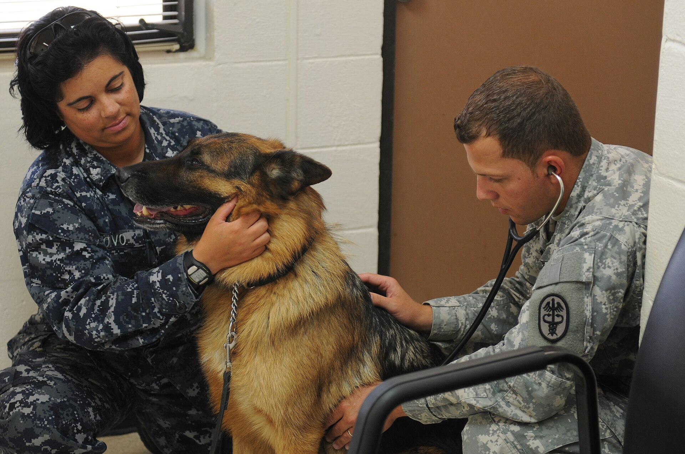

Med tunnelbana
Gå av på Mariatorget och ta uppgång Björngårdsgatan. Sedan är det 350 meter, ungefär 4 minuter i normal takt. Porten är den tredje på vänster sida.
Skriv i formuläret, så ringer vi upp inom en arbetsdag och bekräftar tiden. Vill du ha svar direkt ringer du 08-410 522 30 på vardagar och lördagsförmiddagar. Akuta ärenden tar vi emot alla dagar, hela dygnet.
Bokning
Fyll i namn, telefon och djurslag. Vi återkommer inom en arbetsdag med en tid som passar, oftast inom tre dagar för vanliga besök. Gäller det ett akut ärende ska du ringa i stället för att skriva.

Tider
Mottagningen har öppet sex dagar i veckan. Telefonen besvaras från 08:00, och sista undersökningen bokas 45 minuter innan vi stänger.
| Måndag | 08:00–18:00 |
|---|---|
| Tisdag | 08:00–18:00 |
| Onsdag | 08:00–18:00 |
| Torsdag | 08:00–18:00 |
| Fredag | 08:00–18:00 |
| Lördag | 09:00–14:00 |
| Söndag | Akut via jourlinjen |
Klinikvägen 12, 118 46 Stockholm. Ingången ligger i markplan, 30 meter från hörnet vid Kvarngatan och mitt emot portnumret 14. Behöver du vägbeskrivning ringer du 08-410 522 30.
Inför besöket
Fyra förberedelser som gör besöket kortare och lugnare för både djuret och väntrummet.
En undersökningstid på 30 minuter är hårt bokad. Avbokar du senare än 24 timmar innan besöket, eller uteblir helt, debiteras 400 kr.
Avgiften stryks vid sjukdom eller olycka om du meddelar oss samma dag. Ring eller skicka e-post till info@veterinar-djurklinik-stockholm.se med namn och bokad tid, så tar vi bort den ur fakturan.
Resväg
Kliniken ligger på Klinikvägen 12 på Södermalm, tre minuter från Mariatorget. Porten är öppen under mottagningens tider och hiss finns.
Gå av på Mariatorget och ta uppgång Björngårdsgatan. Sedan är det 350 meter, ungefär 4 minuter i normal takt. Porten är den tredje på vänster sida.
Betalparkering finns på gatan utanför. Avgiften är 12 kr per timme vardagar mellan 09:00 och 19:00, och 8 kr per timme på lördagar. Betala i app eller med kort.
Linje 2 och 66 stannar vid hållplats Kvarngatan, två minuter från dörren. Resan från Slussen tar 7 minuter och från Odenplan 22 minuter.
Jourlinjen är bemannad av veterinär alla dagar mellan 18:00 och 08:00, och hela helgen. Ringer du jourlinjen får du besked om djuret kan vänta till morgonen eller behöver komma in direkt.
Vanliga frågor
De vanligaste frågorna vi får i telefon.
Vanliga besök brukar vi kunna boka inom tre arbetsdagar. Årskontroll och vaccination går oftast att få samma vecka. Akuta ärenden tar vi in samma dag, och då ska du ringa i stället för att skriva.
Nej. Formuläret är gratis och du binder inte upp dig på något. Priset för besöket får du i telefon innan vi bokar, och över 3 000 kr skickar vi en skriftlig kostnadsuppskattning. En grov summa hittar du redan nu i kostnadskalkylen.
Nej, skriv i Ärende-fältet att du vill avboka eller ring på 08-410 522 30. Avbokning ska ske senast 24 timmar innan besöket, annars debiteras 400 kr.
Ring jourlinjen på samma nummer. Den är bemannad dygnet runt av veterinär. Vi hjälper dig bedöma om djuret kan vänta till morgonen eller behöver komma in inom en timme.
Vi tar emot kanin och marsvin för enklare kontroller, och fågel för kloklippning. Vid kirurgi remitterar vi vidare till ett djursjukhus med rätt utrustning. Skriv djurslaget i formuläret så säger vi till direkt om vi kan hjälpa till.
Ring och beskriv symtomen, så hjälper djursjukskötaren dig att välja rätt besök. Du får en prissumma i telefon innan tiden bokas, och över 3 000 kr kommer den skriftligt.